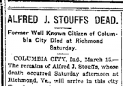
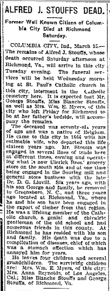
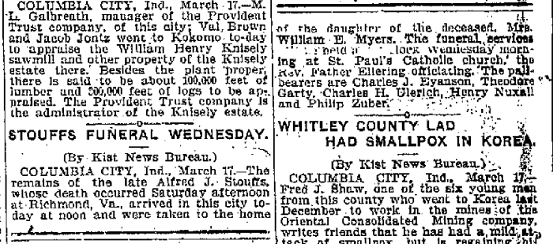

Obituaries of Alfred J. Stouffs from the Fort Wayne (Indiana) Journal-Gazette in 1908
 An obituary and funeral notice from 1908 for Alfred J. Stouffs of Richmond, Virginia, and formerly a resident near Fort Wayne, Indiana.
Citations
March 16, Obituary
"Alfred J. Stouffs dead," obituary, 16 March 1908 (Monday morning), page 5, col. 2; Fort Wayne Journal-Gazette, newspaper; Allen, Indiana, United States
March 18, Funeral notice
"Stouffs funeral Wednesday," funeral notice, 18 March 1908 (Wednesday morning), page 4, col. 6-7; Fort Wayne Journal-Gazette, newspaper; Allen, Indiana, United States
Transcripts [paragraphs, lists and emphasis added]
Obituary (March 16)
COLUMBIA CITY, Ind., March 15 [Sunday]
The remains of Alfred J. Stouffs, whose death occurred Saturday [March 14] afternoon at Richmond, Va., will arrive in this city Tuesday evening [March 17]. The funeral services will be held Wednesday morning [March 18] at St. Paul's Catholic church in this city, interment in the Catholic cemetery here.
It is expected that Mr. George Stouffs, Miss Blanche Stouffs, as well as Mrs. Wm. E. Myers, of this city who left Friday for Richmond to be at her father's bedside, will accompany the remains.
The deceased was seventy-six years of age [born about 1832] and was a native of Belgium. He came to this city in 1866 with his estimable wife, who departed this life sixteen years ago [died about 1892]. Mr. Stouffs was engaged in several lines of trade here at different times, owning and operating what is now Ulerick Bros. grocery store on the south side and at one time being engaged in the flouring mill and general store business with the late Dr. D. G. Linvill.
Six years ago [1902], with his son George and family, he removed to Greensboro, N. C., and three years ago [1905] located at Richmond, Va., where he and his son have been engaged in the export of timber from that region.
He was a lifelong member of the Catholic church, a genial and chivalric gentleman of the old school and had numerous friends in this county. At Richmond, he has resided with his son and family.
His death was due to a complication of diseases, chief of which was a stomach affection [sic] which has annoyed him for years.
He leaves four children and several grandchildren. The surviving children are:
- Mrs. Wm. E. Myers, of this city;
- Mrs. Anna Reynolds, of Los Angeles, Cal.;
- Miss Blanche Stouffs and
- George Stouffs, of Richmond, Va.
Funeral notice (March 18)
COLUMBIA CITY, Ind. March 17 [Tuesday]
The remains of the late Alfred J. Stouffs, whose death occurred Saturday afternoon [March 14] at RIchmond, Va., arrived in this city today [March 17] at noon and were taken to the home of the daughter of the deceased, Mrs. William E. Myers.
The funeral services were held at [?] o'clock, Wednesday morning [March 18] at St. Paul's Catholic church, the Rev. Father Ellering officiating.
The pall-bearers are
- Charles J. Eyanson,
- Theodore Garty,
- Charles H. Olerich,
- Henry Nuxall and
- Philip Zuber.
Images
Obituary (March 16)

Funeral (March 18)
